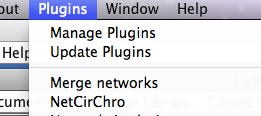

User Manual
Version 1.2
Bioinformatics and Computational Biosciences Branch (BCBB)
OCICB/OSMO/OD/NIAID/NIH
April 2012
The abundance of complete, annotated microbial genomes has enabled the reconstruction of biological networks that incorporate diverse datasets including annotation, expression, and biochemical and physiological characterizations. Analysis of these networks assists in the identification of gene targets and the generation of new hypotheses about their functions. Since the functional association between genes may be inferred from chromosomal location and proximity, an interactive tool for visualizing and analyzing network data in the spatial context of the chromosome was needed. The NIAID Bioinformatics and Computational Bioscience Branch (BCBB) has developed the Networks on Circular Chromosome (NetCirChro) tool to enable users of the network visualization platform Cytoscape to overlay networks onto a circular chromosomal map. The synchronization of data selection between NetCirChro and Cytoscape allows users to leverage the rich Cytoscape features to navigate, search, filter, and highlight complex datasets. The unique NetCirChro analysis features support identifying user-specified gene coordinate patterns and network topology patterns on the chromosome. NetCirChro will help scientists discover the potential role of gene organization in functional regulatory networks. It will also assist in understanding the functional properties of neighboring genes.
Requirements
OS: Windows XP SP2 or SP3, Mac OS X 10.5 (Leopard) or 10.6 (Snow Leopard), or Linux (e.g. Ubuntu 8.04 LTS desktop)
Java: Windows and Linux user can visit http://java.com/en/download/manual.jsp to download the latest version of Java. Mac OS X contains Java with the system. NetCirChro requires the latest release of Java 5 or Java 6.
Cytoscape: NetCirChro supports Cytoscape 2.6, 2.7, and 2.8. For Mac OS X users, it is strongly recommended to use Cytoscape 2.6.3 or later version.
Installation
Download NetCirChro plugin from http://exon.niaid.nih.gov.
Copy the file NetCirChro.jar to Cytoscape plugin/ folder.
NetCirChro supports the Cytoscape session management system. To download the NetCirChro plugin and an example session file, please visit NetCirChro official site http://exon.niaid.nih.gov.
After you copy NetCirChro plugin into the Cytoscape plugin folder, you can use Cytoscape menu "File | Open" to open the session file.
NetCirChro can be launched from Cytoscape menu "Plugin | NetCirChro".

Figure 1 NetCirChro plugin
The genome data panel will be displayed in the Cytoscape control panel.
Figure 2 Getting genome data
NetCirChro can download the data from NCBI and read data from the local files. NetCirChro can also get the data from Cytoscape sessions. Currently, NetCirChro supports GenBank format file (.GBK) or protein table format file (.PTT).
NetCirChro downloads data files of complete microbial genomes from http://www.ncbi.nlm.nih.gov/genomes/lproks.cgi?view=1.
Search
After the button "Import from NCBI..." in the Cytoscape control panel is clicked, NetCirChro will display a download window for microbial genomes. The window displays a list of microbial genome projects. You can search any field in the window.
Figure 3 Searching complete microbial genome data
Download
Once you select an organism, you can click "Download" button to retrieve the data. In the popup window, the available chromosomes of the organism will be displayed. You can choose one or more chromosomes to download.
Figure 4 Downloading selected microbial data
Display
Once the data is downloaded, NetCirChro will automatically read the file and visualize the chromosome.
Figure 5 Displaying the data
You can use NetCirChro to control the visual appearance of the chromosome diagrams and networks.
The main window of NetCirChro has similar structure as Cytoscape window. The left side of the main window is the control panel and bird's eye view. The control panel is used to adjust the diagram appearance. Birds' eye view helps you to navigate different part of the diagram if it is zoomed to a large size.
At the right side are the visualization panel and data panel. The chromosome and network are displayed in the visualization panel. Data panel displays the GenBank annotation of the selected data in the visualization panel.
Figure 6 NetCirChro main window
Here is a quick tour of the NetCirChro menus.
Open GBK/PTT File...
Read the chromosome data file and visualize it. This is identical to "Open GBK/PTT File..." button in the Cytoscape control panel.
Import from NCBI...
Download complete microbial genomes from NCBI web site. This is identical to "Import from NCBI..." button in the Cytoscape control panel.
Open Session...
Open saved session file. This is identical to "Open Session..." button in Cytoscape control panel. Session data includes both Cytoscape data and NetCirChro data.
Close Tab
Close the current diagram. You can also choose to close the associated network in Cytoscape.
Close All Tabs
Close all diagrams in NetCirChro. You can also choose to close all associated networks in Cytoscape.
Save Current Session
Save the current genome data, networks, visual appearance settings, and data selection status to a session file.
Save Session As...
Save session to a specific location.
Save Image As...
Save the current image. NetCirChro supports many popular image format, including JPEG and PNG.
Export to SVG...
Export the current image as SVG format.
Export to PDF...
Export the current image as PDF format.
Print Preview...
Preview the printing.
Print...
Print the current diagram. You can also save or print to a PDF file in the print dialog.
Exit
Close the NetCirChro window. You can choose to save the session when closing the NetCirChro window.
Map Network...
Map a network in Cytoscape to the chromosomes in NetCirChro. You can choose how the node attributes in Cytoscape networks is mapped to the features on the chromosomes.
Add Chromosome...
Add another chromosome to the current diagram.
Create Network
Create sub-networks of the current diagram based on the user selection.
Rename Genome Circle
Rename the tab title of the current diagram.
Rename Track Name
Rename the selected track in the chromosome.
Zoom In
You can use this menu to magnify the current diagram. You can also use Command-I (Mac) or Control-I (Windows) to zoom in the diagram.
Zoom Out
You can use this menu to shrink the current diagram. You can also use Command-O (Mac) or Control-O (Windows) to zoom out the diagram.
Fit Window
Reset the zoom level to make the whole diagram visible in current window.
Name or Function...
Search gene name or GenBank functional annotation using Boolean expression.
Gene Coordinate...
Search genes using the specified location ranges.
Coordinate Pattern...
Search genes using the specified gene location relationships.
Path Starting from...
Search all reachable genes starting from the selected genes in a specified step number.
First Neighbors and Adjacent Edges
Get the neighborhoods of the selected genes.
Gene Distance Distribution
Display the chart of gene distance distribution of all interacted genes or gene products. You can also visualize the distribution on the circular diagram.
Degree Distribution
Display the chart of degree distribution over all genes or gene products in the network. You can also visualize the distribution on the circular diagram.
Shortest Path Distribution
Display the chart of gene distance versus the shortest path length between any two genes or gene products.
Comparative Distribution Chart
Display charts for multiple diagrams.
Cluster Coefficient and Coordination Closeness
Display the chart of cluster coefficient versus coordinate closeness.
NetworkAnalyzer: Network Analysis
If NetworkAnalyzer plugin v2.6 is installed, the analysis features can be called from NetCirChro.
NetworkAnalyzer: Network Modifications
If NetworkAnalyzer plugin v2.6 is installed, the modification feature can be called from NetCirChro.
Cascade
Rearrange Cytoscape and NetCirChro windows.
Active Window List
All top windows of Cytoscape and NetCirChro are displayed under Window menu. You can choose any one to move it front.
Help Contents
Display the NetCirChro manual.
About
NetCirChro version information.
After the chromosome data is loaded into NetCirChro, you need to decide how the nodes in the Cytoscape networks are mapped to the chromosome features in NetCirChro. Figure 7 shows the qualifiers of features in a chromosome. Figure 8 shows the node attributes of a network. In this example, the content of the qualifier "locus tag" is same as the content of the node attribute "canonicalName". Therefore, you need to specify these two fields in the mapping dialog.
However, you may not get the complete mapping by just using one qualifier. For example, some nodes may use a gene synonym instead of locus tag as the canonical name. Therefore, you may have to specify multiple qualifiers to map the node attribute. NetCirChro enables you to use ordered qualifiers to map a node attribute. If the node attribute cannot be found in the first qualifier of all features, NetCirChro will try to map it to the second qualifier you specified, and so on.
Figure 7 Qualifiers in NetCirChro
Figure 8 Node attributes in Cytoscape
You can get the mapping network dialog by clicking menu "Edit | Map Network..." In the dialog, you need to specify a network, a node attribute and one or more qualifiers for mapping.
Network
It contains all Cytoscape networks. Choose the one you want to display in the NetCirChro window.
Node attribute
It contains all node attributes in Cytoscape. Try to identify the one you want to map.
Available qualifiers
It lists all available qualifiers in the chromosome.
Qualifiers for mapping
It lists all qualifiers that are used for mapping. If there is a network in the current NetCirChro diagram, this list contains the qualifiers used for the mapping. Otherwise, if there is no network in the chromosome diagram, you need to add one or more qualifiers from the "Available qualifiers" list to this list.
Add
Add the selected values in the list "Available qualifiers" to the list "Qualifiers for mapping".
Remove
Remove the selected values in the list "Qualifiers for mapping" to the list "Available qualifiers".
Move Up
Move the selected values in the list "Qualifiers for mapping" up by one step.
Move Down
Move the selected values in the list "Qualifiers for mapping" down by one step.
Map in Current Tab
Draw the network in the current chromosome diagram.
Map in a New Tab
Create a new tab, and draw the chromosome and the network diagram in the new tab.
Cancel
Exit the dialog and do not change anything in the current diagram.
Figure 9 Mapping network dialog
NetCirChro enables you to control many visual appearance of the chromosome-network diagram from the track color, location, position to block arrow, label and color.
The functional annotation of GenBank data file is organized as features. Each feature has a feature key to describe the specific annotation. Standardized qualifiers gives the detail description of the annotation. Since the qualifiers are standardized and the qualifier values usually are controlled vocabulary, the annotation can be easily parsed and processed. You can get the detail annotation organization from http://www.ncbi.nlm.nih.gov/projects/collab/FT/index.html.
A track is a ring-shape which represents selected feature sets of the chromosome. In the track setting window, you can add or delete a track. For each track, you can specify the width, position, and color of the current track. You can also specify which features are displayed in the track. For any changes in the track setting, you need click "Update" button to enable the changes on the diagram.
Track setting can be saved by clicking "Save" button. This setting will be the default setting for any following circular diagram.
Figure 10 Track setting
Update: Apply track setting changes to the current diagram.
Add: Add a new track to the diagram with default settings.
Save: Save the current track settings. All new tracks and new diagrams will use the saved track settings except the position.
Track dropdown list: Choose a track in the circular diagram.
"..." button: Rename the current track. The default track name is derived from the current feature filter setting (i.e. the combination of "Key" and "Qualifier" selection).
Mapped features only: If there is a network mapped to the circular chromosome and this option is enabled, the track will only contain the features which are mapped to the nodes in the network.
Key dropdown list: Key, qualifier and strand form the feature filter setting. Only the features that contain the key value will be displayed in the track.
Not: If this option is enabled, only the features which do not contain the following qualifier and the qualifier value will be displayed in the track.
Qualifier dropdown list: Choose a qualifier to filter the features to be displayed in the track.
Qualifier value: Only display the features which have the qualifier value.
Remove Qualifier: Only display the features which contain the "key" annotation, and do not consider the specific qualifier values.
Forward: Display the features on the forward DNA strand.
Reverse: Display the features on the reverse DNA strand.
Any: Display all features regardless the feature filter setting (i.e. the key and qualifier selection)
Size: Control the width of the track.
Position: Control the position of the track. The position value ranges from 0 to 1. The outermost track has a position value 1. The center of the circular diagram has a position value 0.
Color: Control the color of the whole track. You can click the color box to get a color selection dialog.
Delete: Delete the current track.
A block is a small rectangle (or a line) which represents a feature of the chromosome. In the block setting window, you can get the name and location of the feature. The color, width, arrow and label display can be changed in this window.
Figure 11 Block setting
Label: Display the gene name of the feature. You can not change it.
Start: Display the start position of the feature. You can not change it.
End: Display the end position of the feature. You can not change it.
Apply Color: Change the color of the block. YOu can click the color box to get a color selection dialog.
Line width: Change the width of the block. The default line width is same as the track width.
Head: Show an arrow of the feature to indicate the forward direction.
Tail: Show an arrow of the feature to indicate the backward direction.
None: Hide the arrow.
Show Label: Show the gene name besides the block.
In the global window, you can change several options for the whole circular diagram.
Figure 12 Global setting
Background color: Apply the background color to all circular diagrams. You can click the color box to get a color selection dialog.
Block selection color: Apply the color to all selected blocks. You can click the color box to get a color selection dialog.
Use node color from VizMapper: If a network in Cytoscape is mapped to the current circular chromosome, the blocks of the mapped features will use identical node colors in the network.
Use edge arrow from VizMapper: If a network in Cytoscape is mapped to the current circular chromosome, the curved links in the diagram will use identical edge colors in the network.
Display selected track border: If this option is enabled, the selected track will be enclosed by two red circles.
Display selected node label: Display the gene name of the selected blocks and the blocks connected to the selected curved links.
Use smooth line for diagram: By default, NetCirChro draws diagrams with a high quality mode. You can disable this option to draw diagrams with a fast but relatively low quality mode. The graphics is anti-aliasing in the high quality mode.
When you select a tab in NetCirChro, the associated network in Cytoscape will be automatically selected and moved to front if necessary. On the other hand, if you select a network in Cytoscape and there is only one tab in NetCirChro which has the mapped network, the tab will be automatically selected.
When you close a tab in NetCirChro, if the network is not mapped to other chromosomes, NetCirChro will prompt a dialog to let you close the associated network in Cytoscape. If you try to close all tabs in NetCirChro, NetCirChro will also prompt a dialog to let you close all networks in Cytoscape.
Similar to Cytoscape, NetCirChro has a network list panel in the control panel. You can use this panel to select, rename and destroy networks.
Figure 13 Network list panel
After the network is mapped to the chromosome, the selection in Cytoscape and NetCirChro is always synchronized. In both visualization panels, the selected nodes (blocks) and edges are highlighted. Meanwhile, the data panel displays the corresponding attribute values and annotations.
Figure 14 Selection synchronization
Since the data selection is synchronized between Cytoscape and NetCirChro, you can select, search or filter data from either Cytoscape or NetCirChro.
There are several ways to select data in NetCirChro.
In NetCirChro, you can use mouse to drag a region on the diagram. The enclosed blocks and edges will be selected.
Figure 15 Select data by mouse dragging
Similar to Cytoscape, you can also choose data from data panel by right clicking and choosing "Select from table" menu.
Figure 16 Selection from table
All search results in NetCirChro will be automatically selected and highlighted.
Figure 17 Selection from searching
After the selection, the number of the selected nodes and edges are displayed in the network list panel of the control panel. You can also move the mouse outside of the circular diagram. A small yellow window will be displayed to show the mapping setting and the number of the selected nodes and edges.
NetCirChro supports multiple chromosomes in one diagram. The additional chromosome, by default, will be displayed as a new track from the same starting position as the existing tracks. In addition, any newly-added chromosome should have smaller length than the first chromosome.
You can use menu "Edit | Add Chromosome..." to add a new chromosome. When the chromosome is added, the mapping between the network and the chromosomes will be updated automatically.
When a subset of data is selected in a network, you can create a subnetwork in Cytoscape. Similarly, NetCirChro provides a subnetwork creation feature. You can use menu "Edit | Create Network" to create a subnetwork from the selected blocks and edges in the current circular chromosome diagram.
There are several options for subnetwork creation.
From selected nodes and selected edges
The subnetwork contains all the selected nodes and nodes of selected edges.
From selected nodes and all edges
The subnetwork contains all the selected nodes and edges among the selected nodes.
In new tab
The subnetwork will be displayed in a new tab.
In current tab
The subnetwork will replace the current diagram.
Clone current network
The current diagram will be cloned and displayed in a new tab.
NetCirChro supports the session saving and restoring of Cytoscape. The session file contains all the network data, chromosome data, visualization setting, and selection status.
Figure 18 Session menu
Figure 19 Open session button
To zoom in the current diagram, you can use the shortcut key Command-I (Mac OS X) or Control-I (Windows). To zoom out the diagram, you can use Command-O (Mac OS X) or Control-O (Windows). Finally, if you want to display the whole diagram in the current tab, you can use the menu "View | Fit Window".
You can use the menu "File | Save Image As..." to export the image of the current diagram. NetCirChro supports many popular image formats including JPEG and PNG.
If you want to export the high-quality image for publication purpose, you can export the image as SVG or PDF format.
Figure 20 Save image menu
NetCirChro provides "link out" feature similar to that of Cytoscape. When you select an gene in the NetCirChro data panel and right click it, a link out menu will be automatically displayed which allows you to search the gene in a variety of online databases.
Figure 21 Link out
In addition to the selection and link out feature, NetCirChro data panel allows you to display detail qualifier data and export the selected genes to a text file.
By default, NetCirChro only display the gene name and functional annotation in the data panel, which are corresponding to the locus tag and notes in the qualifiers. You can right click the data panel and choose "Customize columns" to display other qualifier values.
Figure 22 Customize columns menu
Figure 23 Column selection window
You can also check the detail of selected features by clicking the popup menu "Show detail". In the detail window, the GenBank annotation of selected features are displayed.
Figure 24 Qualifer detail window
The popup menu of the data panel contains a menu "Export data". This allows you to export the selected genes in NetCirChro to a tab delimited text files.
NetCirChro provides several methods to search genes in the chromosome.
NetCirChro provides powerful Boolean search capability for gene names and functional annotations. NetCirChro recognizes the searching expression formed by AND, OR, NOT, and parentheses.
Figure 25 Search names or functions
hypothetical
Display if the annotation or gene name contains "hypothetical"
protein
Display if the annotation or gene name contains "protein"
hypothetical OR protein
Display if the annotation or gene name contains "hypothetical" or "protein"
hypothetical AND protein
Display if the annotation or gene name contains "hypothetical" and "protein"
NOT hypothetical AND protein
Display if the annotation or gene name contains "protein" but not "hypothetical"
NOT (hypothetical OR protein)
Display if the annotation or gene name contains neither "hypothetical" nor "protein"
"hypothetical protein"
Display if the annotation or gene name contains the whole string "hypothetical protein"
After you click "Search" button to get the query result, you can choose one or more by clicking the checkbox in the "Select?" column. Then, you can click "OK" button to display the selected data in the NetCirChro main window.
You can search and highlight genes based on their coordinates. The input can be a single number, or a range by connecting the start and end position with a hyphen. You can separate multiple ranges by using comma.
Figure 26 Coordinate range search window
Coordinate pattern search provides a powerful tool to search the spatial pattern in the network. It enables the users to specify the spatial pattern with the length of gene patterns and the gap between genes.
Figure 27 Coordinate pattern search window
Length and Degree are used to describe the contiguous node pattern with respect to position in the chromosome.
Length: one immediate neighbor accounts for length "one", second immediate neighbor is length "two".
Degree: degree "one" accounts for immediate neighbors, "two" accounts for a neighbor leaving one gene (also in the network) in between, "three" accounts for a neighbor leaving two genes in between.
Backbone --------
Length=1 --++----
Length=2 --+++---
Length=4 --+++++-
Degree=1 ++------
Degree=2 +-+-----
Degree=3 +--+----
In the search window, you can specify the length and degree of the pattern. Meanwhile, you can choose how the pattern is searched in the network.
Start position
If you choose this option, you need to specify the start coordinate. Then NetCirChro searches the pattern from this position. When you click "Find" button, NetCirChro will highlight the pattern in the diagram. Then, you can click "Find Next" and NetCirChro will find the pattern in the following position automatically.
Common neighbors
If you choose this option, NetCirChro tries to find all patterns in the chromosome. For each pattern, NetCirChro tries to find any gene which regulates (or interacts) all the genes in the pattern. If any genes found, the corresponding pattern will be selected and highlighted.
NetCirChro can find a path or a loop in the network. First, you need select one or more genes in the diagram. NetCirChro will find all paths or loops starting from the selected genes.
In the path finder window, you can specify the length of the path or loop. A large length may take a long time to complete the searching. NetCirChro will prompt a waiting dialog which displays the current found path number. This waiting dialog also allows you to cancel the searching if necessary.
Figure 28 Path finder window
Figure 29 Waiting dialog
NetCirChro can find all neighbors nodes and adjacent edges of selected nodes in a network. This feature is a combination of Cytoscape menu "Select | Nodes | First neighbors of selected nodes " and " Select | Edges | Select adjacent edges"
Figure 30 Searching the neighbor nodes and edges
NetCirChro provides several statistics for the chromosome and network data. Beyond the conventional statistics, NetCirChro can visualize the quantitative results on the diagram.
Gene distance means the coordinate distance between two genes of a chromosome. NetCirChro calculates the distance between every gene pair, if their products have an interaction in the protein-protein interaction network.
Figure 31 Gene distance distribution
Based on the distance distribution, NetCirChro visualizes the distance on the circular diagram. If you click the button "Map to Circular Genome", NetCirChro will create a new map in the VizMapper. The value of gene distance is mapped to a continuous color range. The, the color of the edges in the Cytoscape and NetCirChro represents the distance between the two nodes/blocks. From the diagram, you can find that most interactions occur between gene products which are close to each other in the chromosome.
Figure 32 A new map of gene distance in VizMapper
Figure 33 Mapping gene distance to edge color
In a network, degree means the connection number of a node. NetCirChro calculates the degree of each node in a network and plots the node number of each degree in the chart.
Figure 34 Degree distribution
If you click the button "Map to Circular Genome", NetCirChro will create a new map in the VizMapper. The value of degree is mapped to a continuous color range. Then, the color of nodes in Cytoscape and the color of blocks in NetCirChro represent the degree number. From the diagram, you can quickly identify the network hub in the chromosome.
Figure 35 A new map of degree distribution in VizMapper
Figure 36 Mapping degree distribution to node color
Any two genes (or their products) in a network have one or more paths. This box plot chart displays the shortest path length versus their distances on the genome. The box plot chart displays the statistical distribution of the gene distances on shortest path length. The bottom and top of the box shows the 25th and 75th percentile (the lower and upper quartiles, respectively), and the band near the middle of the box shows the 50th percentile (the median). The T shape ends show the minimum and maximum of the data.
Figure 37 Shortest path length distribution
Since it takes a long time to calculate all shortest path lengths in a large network, NetCirChro will prompt a waiting dialog during the calculation. You can stop the calculation any time by clicking the button "Cancel Task".
Figure 38 Waiting dialog
It is interesting to compare the statistics of several networks. These networks can be generated from different organisms, mutation types, or experimental conditions. NetCirChro provides the chart comparison between several networks.
Figure 39 Comparison options
In the comparison option window, you can choose which network will be used for the comparison, and which chart will be displayed. NetCirChro will display the charts for the selected network side-by-side.
Figure 40 Comparison chart
Cluster coefficient defines the connection density in the neighbors of a network node. Coordinate closenenss is defined as the reciprocal of the average gene distance of a gene.
For every node in the network, NetCirChro gets the neighbors of the node and calculates the cluster coefficient and coordinate closeness. The values are plotted as a scatter plot.
Figure 41 Cluster coefficient versus coordinate closeness
NetworkAnalyzer is a Cytoscape plugin to calculate many network topological properties. NetCirChro automatically detects if NetworkAnalyzer is installed in the user's Cytoscape folder. If the plugin exists, NetCirChro will add two menus under "Statistics" menu which provides a shortcut to the feature of NetworkAnalyzer plugin.
This NetCirChro version is compatible with NetworkAnalyzer 2.6.1.
Figure 42 Network Analyzer menu
NetCirChro provides a comprehensive help document with the application. The help system also has the fulltext search capability. You can get the help from the menu "Help | Help Contents".
For downloading the plugin and sample data, please visit http://exon.niaid.nih.gov.
For questions and comments, please email NetCirChroSupport@niaid.nih.gov.
Shannon, P., Markiel, A., Ozier, O., Baliga, N.S., Wang J.T., Ramage, D., Amin, N., Schwikowski, B., Ideker, T. (2003). Cytoscape: a software environment for integrated models of biomolecular interaction networks. Genome Res. 13:2498-2504.
Assenov, Y., Ramírez, F., Schelhorn, S.E., Lengauer, T., Albrecht, M. Computing topological parameters of biological networks. (2008). Bioinformatics. 24(2):282-284.
In any work or product derived from this material, proper attribution of the authors as the source of the software or data should be made.
Acknowledgements should read:
"The NetCirChro software is developed and maintained at the Bioinformatics and Computational Biosciences Branch (BCBB), Office of Cyber Infrastructure and Computational Biology (OCICB), National Institute of Allergy and Infectious Diseases (NIAID) in Bethesda, Maryland, United States of America. The software is freely available for download at http://exon.niaid.nih.gov."
NetCirChro is free software; you can redistribute it and/or modify it under the terms of the GNU General Public License as published by the Free Software Foundation; either version 2 of the License, or (at your option) any later version.
This program is distributed in the hope that it will be useful, but WITHOUT ANY WARRANTY; without even the implied warranty of MERCHANTABILITY or FITNESS FOR A PARTICULAR PURPOSE. See the GNU General Public License for more details.
You should have received a copy of the GNU General Public License along with this program; if not, write to the Free Software Foundation, Inc., 59 Temple Place - Suite 330, Boston, MA 02111-1307, USA.
v1.2: Fix importing NCBI data bug using new address
v1.1: Support Cytoscape 2.8.x
v1.0: First release for Cytoscape 2.6.x
NetCirChro is built with a number of open source third-party Java libraries. The NetCirChro team gratefully acknowledges the following libraries:
Cytoscape: A network visualization framework. Information is available at http://cytoscape.org/.
DNAPlotter and Artemis: A circular genome editor. Information is available at http://www.sanger.ac.uk/Software/Artemis/circular/.
JFreeChart and JCommon: A 2D chart library. Information is available at http://www.jfree.org/jfreechart/.
JGraphT: A graph data structure and algorithm library. Information is available at http://jgrapht.sourceforge.net/.
JGoodies Forms. Information is available at http://www.jgoodies.com/freeware/forms/.
BeansBinding. Information is available at http://www.netbeans.org/kb/60/java/gui-binding.html.
Apache Commons HTTPClient: Information is available at http://hc.apache.org/httpclient-3.x/.
Apache Commons Codec: Information is available at http://commons.apache.org/codec/.
Apache Commons Collections: Information is available at http://commons.apache.org/collections/.
Apache Commons Logging: Information is available at http://commons.apache.org/logging/.
NetCirChro uses a simplified curve generation algorithm derived from CirCos:
CirCos: A genome visualization tool. Information is available at http://mkweb.bcgsc.ca/circos/.